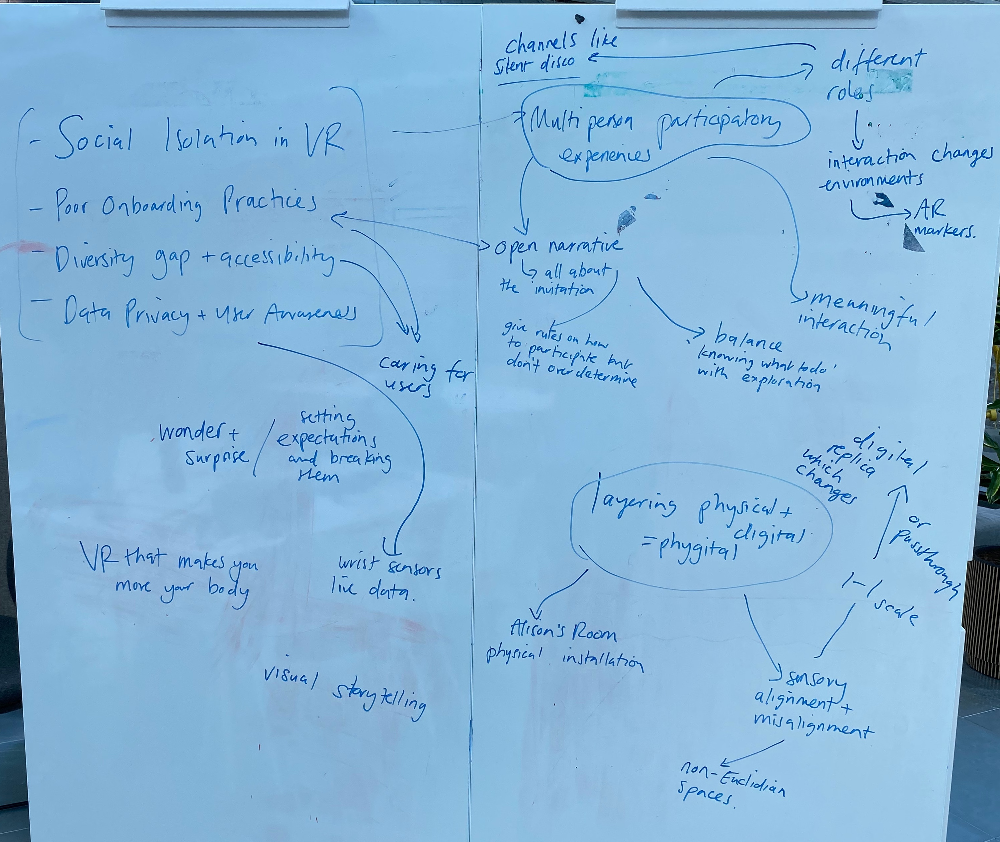

Audience-centric VR - BDFI funded project

Last September, Dr Harry Wilson, Eirini Lampiri
and I were awarded seedcorn funding by the Bristol Digital Futures Institute, to research audience-centric VR.
We were interested in how one could create immersive experiences, that are accessible to different audiences, by designing combined experiences that engage both
VR participants and non-VR participants. We set out to answer the research question:
How can different modes of communicating between participants inside and outside of VR lead to more playful, accessible experiences?
I am supporting the project as a Creative Techologist. This means that I've been mostly contributing by designing and developing prototypes.
These enable us to test different hypothesis, evaluate whether certain interactions are interesting and / or playful and inspire new conversations and ideas.
The below is a summary of prototypes I have developed as part of this project.
If you want to find out more about our early research process and the questions we asked and answered, check out Harry's Blog Post!
Tracked Objects
One series of experiments involved Vive trackers and trying out different possibilities of connecting one person in VR with one person outside of VR through them. We experimented with:
- Trackers being spatial sound sources, where each tracker determined the location of the sound of one instrument of one music track. (Video)
- Trackers being spotlights in a completely dark environment. (Video)
- Trackers emitting light bubbles, also in a completely dark environment. (Video)
Webcam Feed
For another series of experiments, we thought about how we could use different scales of environments between the VR person and any participants outside of VR. We were thinking about maps that could be drawn outside of VR while influencing the VR environment; or small tracked objects on a stage / in a puppet house, which appear in life-size in VR. For this, I developed a few different prototypes that used a webcam feed which influenced the VR environment in different ways:
- Webcam feed as floor texture (Video)
- Webcam feed as floor texture and as a factor in the floor terrain (Video)
- Webcam feed as floor texture and a color detection which generates spheres accordingly (Video)
- Webcam feed as input for Vuforia, detecting image targets on blocks through a acrylic table setup.
First Playtest
In February, I combined all these experiments into one prototype which we playtested with two groups of students. The prototype uses Vive trackers for life-size and same-space tracked objects and it uses a glass table with image target detection for different-scale and different-space tracked objects.

Further Development
We got a lot of feedback at the first playtest, and we did our best to address it, while thinking about our past experiments and the wider research questions. One thing we (and the playtest participants) loved about the prototype, was the tabletop setup with tracked objects, that allowed for communication by influencing the virtual scene. We focused on that, added a stronger story element, re-worked the visuals and the virtual environment and made the tracking more robust, before showcasing a new version at First Friday at PM Studio. I love the new interactions I got to implent: They included using the image tracker position to uncover a pointcloud in the VR scene and later, to turn that pointcloud into a mesh at the tracker's position.